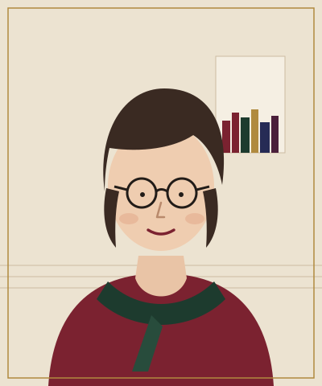

About
A life on the marsh, and off it
Clemency Thorne was born above the bar of the Ship Inn at Fennick, a pub so remote that the brewery delivered by tractor in winter. She learned to read from the backs of beer mats and to listen from the regulars, who told the same stories every night and changed one small detail each time.
At eighteen she left for Canterbury to study history, and stayed. For eleven years she was a court reporter in Maidstone, sitting through burglaries, frauds and, twice, murders. She says it taught her two things: that nobody tells the whole truth in a witness box, and that the most important person in any courtroom is often the one in the public gallery who never says a word.
She wrote The Drowned Church on the train between Canterbury and Maidstone, a page a day in a reporter’s notebook. It won the Sandpiper Award for best debut, and Detective Sergeant Esme Lark has been asking her awkward questions ever since.
Clemency lives in a narrow house in Canterbury with her partner, a retired lifeboat mechanic, and a lurcher called Shingle who is afraid of the sea. She swims at Whitstable all year round, badly.

The places
Where the books are set
Every book is set within forty miles of where Clemency grew up. Most of the places are real; Fennick, its pub and its sluice are invented, though people on the Marsh have been known to give directions to them.
- Romney Marsh The Drowned Church, The Glass Marsh
- Hythe Salt and Shingle
- Dungeness Low Tide at Dungeness
- Faversham The Cartographer’s Widow
- Canterbury Every Bell in Canterbury
A writing life
- 2008
Starts as a court reporter in Maidstone, covering crown and magistrates’ courts across Kent.
- 2016
Her short story “The Sexton’s Daughter” wins a regional prize and finds her an agent, Sabine Corrigan.
- 2019
The Drowned Church is published and wins the Sandpiper Award for best debut. Clemency leaves the courts to write full time.
- 2021
The Cartographer’s Widow, her first historical novel, is shortlisted for the Harrowell Prize.
- 2024
Every Bell in Canterbury becomes her bestselling book, and is translated into fourteen languages.
- Now
The Glass Marsh, the fourth Esme Lark mystery, and a fifth on the desk.
Questions people ask
Is Esme Lark based on a real detective?
No, though she borrows the patience of several police officers Clemency watched give evidence, and the temper of none of them. Esme’s family pub is a lot like the one Clemency grew up in.
Will there be more Esme Lark books?
Yes. The fifth is being written now. Newsletter subscribers hear its title first.
Can I send you my manuscript?
Clemency can’t read unpublished work, for legal reasons and because she would never get anything written. Agencies, including Winslow Greer, list how to submit on their own websites.
Is there going to be a television series?
The screen rights to the series have been optioned. That can mean a lot or nothing at all, so there is no news to share yet. Producers can write to the rights team.
How can I get a signed copy?
Order from Mercery Lane Books in Canterbury and ask for a signed or dedicated copy. Clemency pops in every few weeks with a pen.